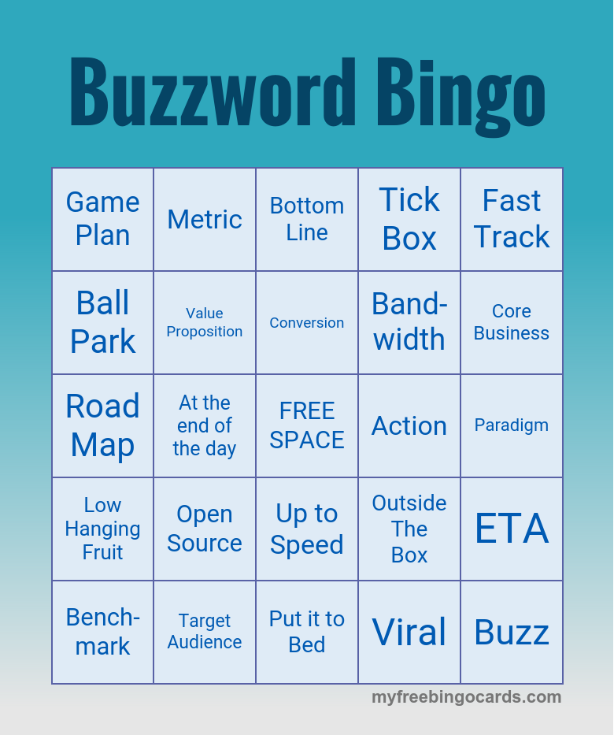
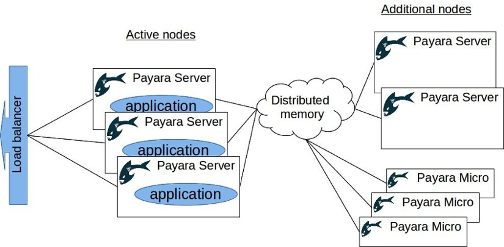
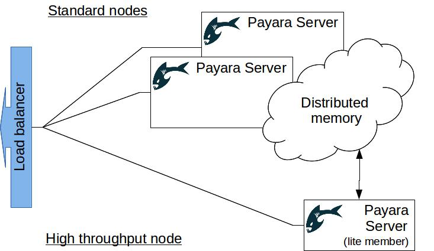
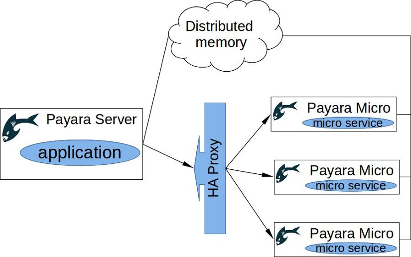

# Easily scale enterprise applications using distributed data grids <br/> <p>Ondrej Mihályi</p> <p style="font-size: 70%">@omihalyi</p> <aside class="notes"> Q: How many think about a big load upfront? <ul> <li>some do, good, I almost never did </li> <li>it's not in requirements </li> <li>business don't specify, maybe because they don't know </li> <li>even if specd, the load increases later </li> <li>what about designing apps to adapt them to any load? </li> </ul> </aside>
<span class="template"/> # Scalable applications <ul> What it means? Another buzzword? </ul> <aside class="notes"> </aside>
<span class="template"/> # Highly Scalable applications !? <ul> <span><span class="fragment" data-fragment-index="1">Just great.</span> <span class="fragment" data-fragment-index="2">Buzzword Bingo time!</span></span>  </ul> <aside class="notes"> </aside>
<span class="template"/> # Seriously, what are we after? - The main Goal: <ul> <lu>add more resources to do the job faster.</lu> </ul> <aside class="notes"> More CPU, more RAM, etc. </aside>
<span class="template"/> # What is scalability - Ability to improve with more resources - Not straightforward <ul> - More working hours ≠<!-- not equal--> more done - More people on the job ≠<!-- not equal--> faster </ul> <aside class="notes"> What scalable application is. More people to do the job doesn't have to do it faster. We wish so - if only we could organize well, e.g. parallel assembly lines scale. </aside>
<span class="template"/> # Types of scaling - <strong>Vertical</strong> <ul> <lu>easy, brute force, often works </lu> <lu>inefficient, limited by physics</lu> </ul> - <strong>Horizontal</strong> <ul> - enables granular scaling - more complexity </ul> <aside class="notes"> Vertical scaling always works, but inefficient - everything is scaled, fast made even faster, slow is not faster enough. Can have bottlenecks - not every resource can be scaled vertically at the same pace. We're after horizontal scaling to distribute the load better and efficiently. Slow gets faster, fast stays fast and doesn't compete for more resources wth slower. </aside>
<span class="template"/> # Challenges of horizontal scaling - distributed programming - increased communication - shared state <aside class="notes"> </aside>
<span class="template"/> # Avoiding bottlenecks - <strong>[Amdahl's law](https://en.wikipedia.org/wiki/Amdahl%27s_law)</strong>: <ul> Speedup <u>limited</u> by the parts that <u>don't benefit</u> from added resources </ul> - bottlenecks: sequential tasks, synchronization, communication <aside class="notes"> Amdahl's law: https://en.wikipedia.org/wiki/Amdahl%27s_law - similar to the problem of adding people to a job - more resources don't always mean a significant speed up - application needs to be able to utilize those resources, avoiding bottlenecks - in the same way as adding new intercity highways don't help if there's no highway though/around city center's </aside>
<span class="template"/> # In-memory datagrids (1/2) - distributed shared state <ul> <li>data replication and recovery </li> <li>data evenly distributed </li> </ul> - distributed communication <ul> <li>locks </li> <li>queues, topics, executors </li> </ul> <aside class="notes"> Distributed memory and datagrids can help with horizontal scaling - distributed shared state - no need to synchronize through a central point (DB) - distributed persistence out of the box - data replication and recovery out of the box </aside>
<span class="template"/> # Distributed in-memory datagrids (2/2) - simplified programming model <ul> <li>common structures (map, set, ...) </li> <li>service-discovery, load-balancing </li> </ul> - distributed execution <ul> <li>code and queries sent to the data </li> </ul> - bonus: fast persistence with no ORM <aside class="notes"> Distributed memory and datagrids can help with horizontal scaling - distributed shared state - no need to synchronize through a central point (DB) - distributed persistence out of the box - data replication and recovery out of the box - simplify communication - possible to send data and instructions easily to any node - often no service discovery is needed because nodes are already connected and communicate - simplified programming model - provides abstraction over moving parts (node is up/down, data fetching from a remote node as from local) - simple and well-known interfaces - map, queue, executors </aside>
<span class="template"/> # Examples of data-grids - Hazelcast - JBoss Infinispan - Oracle Coherence - Terracotta <aside class="notes"> </aside>
<span class="template"/> # Hazelcast memory utilization - Replicated up to X nodes - Data evenly distributed - Lite nodes without data - Off-heap data (enterprise) <aside class="notes"> </aside>
<span class="template"/> # Other Hazelcast features - Auto discovery and recovery <ul> - multicast and TCP joiners - data redistribution when nodes join/leave </ul> - Distributed cache (JCache API) - Distributed queries and ExecutorService <aside class="notes"> </aside>
<span class="template"/> # Demo time <aside class="notes"> </aside>
<span class="template"/> # Payara Server - derived from GlassFish Java EE Server - embedded Hazelcast <ul> - HTTP session replication - JCache CDI integration - message bus over CDI events </ul> <aside class="notes"> </aside>
<span class="template"/> # Payara Micro - derived from embedded GlassFish - executable JAR or embedded - web apps in a separate file or uber JAR - designed for flexible clustering - Hazelcast started by default <aside class="notes"> </aside>
<span class="template"/> # Scale up! <p> Once an app is designed for flexible clustering, it becomes elastic - easily adaptable to increasing load. </p> <aside class="notes"> </aside>
<span class="template"/> # #1 Multiplication - Additional instances <ul> - more CPUs and other resources </ul> - Simple load balancer is enough <ul> - data is shared automatically </ul> <aside class="notes"> </aside>
<span class="template"/> # #2 Scaling memory - Data access is often a bottleneck <ul> →<!-- -> --> Keep data in memory </ul> - Additional instances with no apps <ul> - Dumb nodes carrying data - Increase available memory - Increase resilience to outages </ul> <aside class="notes"> </aside>
<span class="template"/> # #2 Scaling memory  <aside class="notes"> </aside>
<span class="template"/> # #3 Separating data from logic - more data →<!-- -> --> more heap and time in GC - run critical apps on lite nodes <ul> - slower data access but less GC cycles - tweak GC & heap for throughput </ul> - data and app nodes in pair on the same machine <aside class="notes"> </aside>
<span class="template"/> # #3 Separating data from logic  <aside class="notes"> </aside>
<span class="template"/> # Demo time <aside class="notes"> </aside>
<span class="template"/> # #4 Scale app parts separately - some parts of an app are bottlenecks - split those into separate services <ul> - can be scaled higher - resources assigned more granularly </ul> - small and lean services with Payara Micro or even a standalone Hazelcast <aside class="notes"> </aside>
<span class="template"/> # #4 Scale app parts separately  <aside class="notes"> </aside>
<span class="template"/> # Anything to ask? <div class="fragment">Thank you</div> <aside class="notes"> </aside>
<span class="template"/> # Resources - source code: [OndrejM-demonstrations/scaling-with-datagrids](https://github.com/OndrejM-demonstrations/scaling-with-datagrids) - [article about flexible clustering](http://blog.payara.fish/flexible-clustering-with-payara-server) - Hazelcast: [hazelcast.com](https://hazelcast.com/), [hazelcast.org](https://hazelcast.org/) - Payara: [payara.fish](http://www.payara.fish), [payara.org](http://www.payara.org) <aside class="notes"> </aside>